At a glance
A receipt-splitting app. Photograph a bill, AI extracts the line items, you assign items to people, and MiniSplit splits tax and tip fairly, produces a shareable breakdown and tracks who owes whom.
Overview
MiniSplit is a mobile-first web app for friends, roommates, coworkers and travel groups who share meals and expenses. Instead of typing every expense by hand, you take a photo of the receipt. A vision model reads the line items, and the app works out each person's exact share, including their proportional part of tax and tip.
The problem
Splitting a group bill is tedious and error-prone. Someone has to read the receipt, remember who ordered what, divide shared dishes, and then apply tax and tip fairly. Splitting evenly is quick but unfair, and typing every item into an expense app is fair but slow. Afterwards, someone still has to remember who has paid back and who hasn't.
The solution
MiniSplit uses item-level splitting driven by AI receipt scanning. You upload a photo and review the extracted items. Then you add people, tap to assign items (shared items split automatically), and choose who paid. The app calculates each person's total with tax and tip distributed in proportion to what they ordered. The result can be copied, shared through the native share sheet or sent as a link, and running balances are tracked per friend.
Key features
- Receipt upload (JPEG, PNG, WEBP or PDF) with type and size validation
- AI extraction of line items, quantities, prices, tax, tip and total using a vision model
- Manual-entry fallback when a receipt can't be read, so the flow never dead-ends
- Edit and verify screen to fix, add or remove extracted items
- Item assignment: add participants, assign items, split shared items evenly, with quantity-aware pricing
- Proportional tax and tip: each person pays tax and tip in proportion to their subtotal
- Payer selection and a per-person breakdown
- Share: copy a summary, use the native share sheet, or send a public share page
- Bill history and friend balances with a settle-up action
- Mobile-first UI: bottom navigation, toasts, and Material Design 3 color tokens
How it works
The upload endpoint sends the image to a vision model with a structured-extraction prompt and gets back line items, tax, tip and total. The user can correct the result. Assignment state lives in a Zustand store. A pure calculation module (calculateTotals) computes subtotals per person, splits shared items, and distributes tax and tip in proportion. Finished bills go into history, and balances are derived from who paid and who owes.

Tech stack
| Layer | Technology |
|---|---|
| Framework | Next.js 16 (App Router, Turbopack), React 19, TypeScript 5 |
| Styling | Tailwind CSS v4, Material Design 3 tokens, Material Symbols, lucide-react |
| UI kit | shadcn/ui pattern on Radix UI, class-variance-authority, clsx, tailwind-merge |
| State | Zustand 5 (receipt store + persisted history store) |
| Auth | Clerk (middleware-protected routes) |
| AI / OCR | OpenAI vision model (gpt-4o-mini) for structured receipt extraction |
| Planned infrastructure | Cloudflare Pages, D1 (SQL) and R2 (object storage) |
| Tooling | ESLint 9, PostCSS |
Engineering highlights
- Fair-share math as a pure module. Tax and tip are split in proportion to each person's subtotal, with correct handling of quantities and shared items. Keeping it as a pure function makes it easy to test and reuse on the result and share pages.
- AI with a safety net. Extraction returns structured data, the user always reviews it before splitting, and a manual path takes over when the model can't read a receipt.
- Mobile-first interaction design. The flow is short and tap-friendly (upload → verify → assign → result), with bottom navigation and the native Web Share API.
- Composable UI. Accessible Radix primitives use the shadcn/ui pattern, with Material Design 3 color tokens for a consistent look.
Challenges & what I learned
- Receipts are messy. Receipts vary widely in layout, abbreviations and quality. Asking for structured output, always letting the user verify it, and keeping a manual fallback made the feature dependable.
- "Fair" needs a precise definition. Proportional tax and tip, even splits of shared items, and quantity-aware pricing all needed careful rounding rules. That made a strong case for keeping the calculation logic isolated and testable.
- From device-local to multi-user. Local history works well for one person. Shared links and balances across devices mean moving to a real database with stable identities for each person. That work is under way.
Status & what's next
MiniSplit is an early MVP in active development. The core flow works end to end: scan, verify, assign, calculate and share. In progress and planned:
- Cloud persistence for receipts and balances per account, with sync across devices
- Groups such as "Trip to Goa" or "Flatmates", each with a shared ledger
- Settlement between two specific people and partial payments
- Debt simplification to minimize the number of transfers
- Uneven splits by percentage, shares or fixed amounts
- Multi-currency
- UPI, Venmo and PayPal "pay now" links
- Letting friends claim their own items from a share link
- PWA install and camera-first capture
- Confidence highlighting for low-certainty extracted lines